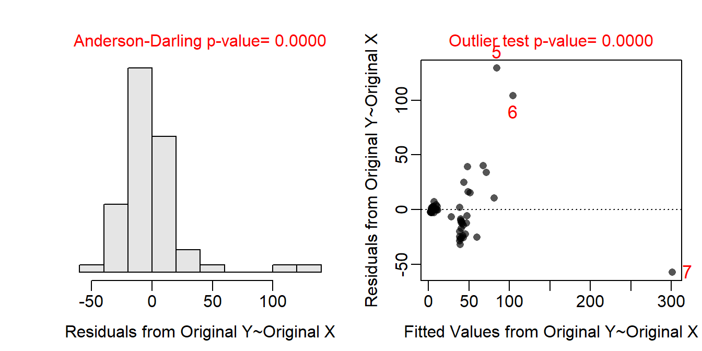
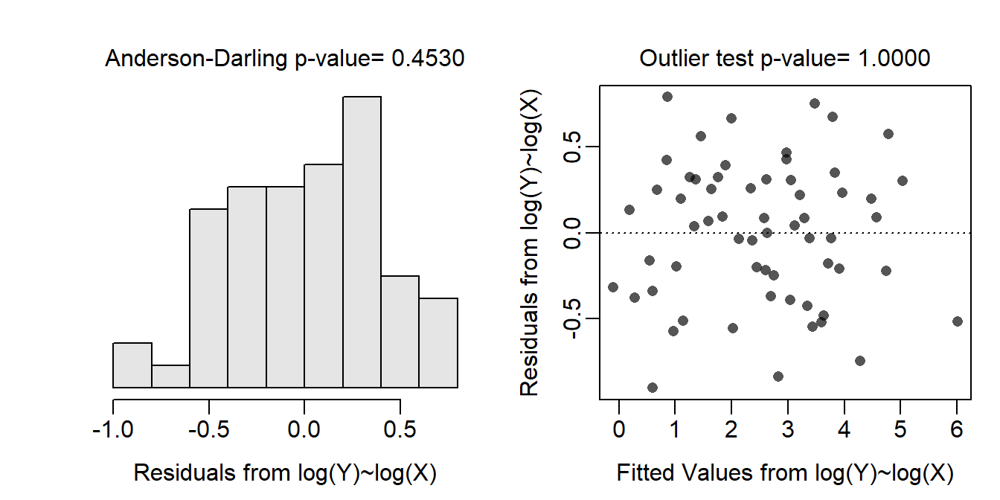
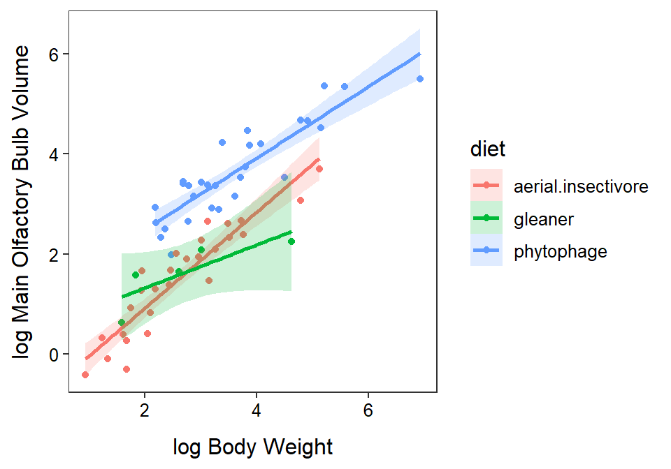

Biologists recognize that brains perform different sensory operations for different activities of the animal. As such there is a thought that the size of brains, or the size of particular portions of brains, may differ depending on the primary foraging activity of the animal. For example, senses that are most useful for bats that are insectivorous may be quite different than senses that are most useful for nectar-feeding bats and, as such, bats in these two groups may have differently sized brains.
To assess this hypothesis, Hutcheon et al. (2002) recorded the volume of three brain regions (main olfactory bulb, hippocampus, auditory nuclei) for 63 species of bats (Chiroptera). They were primarily interested in determining if the volume of brain regions differed among broad foraging categories (phytophagous, gleaner, and aerial insectivore). However species of bats differ in overall size and the size of the brain is likely related to overall size (i.e., larger bats likely have larger brains). Thus, they also recorded the body weight for each species of bat so that it could be included in a model as a covariate and, thus, effectively “accounted for” when considering brain size.
With this the response variable is the main olfactory bulb volume (MOB), the covariate is body weight, and the factor variable is the foraging group categories (called “diet” in the data). The first hypothesis to be tested (i.e, parallel lines test) is
If this H0 is not rejected (i.e., the lines are parallel) then the following two sets of hypotheses will be tested (i.e., coincident lines and relationship tests),
and
The sample size is very unbalanced with very few gleaners in the data set. The data are independent as the MOB and body weight measurements are summary measures for entire species and not measurements on individual bats. It is not realistic to think that summary measurements for entire species are connected across all of the species. The assumptions are clearly not met on the original scale as the residual plot does not show a “random scatter” of points, though it is difficult to tell if the issue is linearity, homoscedasticity, or both. In addition, the residuals are not normally distributed (Anderson-Darling p<0.00005) or not strongly skewed and several outliers are present (p<0.00005). The assumptions are met when both variables are transformed to the log scale as seen by a residual plot with neither an evident curve or funnel-shape, normally distributed residuals (Anderson-Darling p=0.4530), and no outliers (p>1). Thus, the analysis will continue on the log-log transformed scale.
The relationship between log MOB and log body weight differs among the three foraging groups (parallel lines test p=0.0107). It appears that the slope of this relationship for the aerial insectivore group is different from the slope for gleaners (p=0.0437) and phytophages (p<0.00005). The slopes for this relationship do not however differ between gleaners and phytophages (p=0.9719). Specifically, it appears that the slope for the aerial insectivores is between 1.006 and 1.627 times greater than the slope for gleaners and between 1.176 and 1.453 times greater than the slope for phytophages. The slope of the relationship for all three groups was significantly positive (p≤0.0123).
In conclusion, there is a significant positive relationship between mean MOB and body weight on the log-log scale (so it is a power function relationship), but that relationship differs among foraging groups. It appears that the mean MOB increases at a faster rate with increasing body weight for aerial insectivores than for gleaners and phytophages. At a constant body weight it appears that the phytophages have a larger mean MOB than gleaners. However, a similar statement cannot be made for aerial insectivores because they have a different relationship between MOB and body weight. An inspection of the graphic though suggests that the mean MOB for aerial insectivores is likely less than that for phytophages and similar ot that for gleaners over the range of observed body weights. In summary, there does appear to be an effect of foraging behavior on the size of the main olfactory bulb, irrespective of the overall size of the bat.
bat <- read.csv("https://raw.githubusercontent.com/droglenc/NCData/master/Batmorph2.csv") %>%
filter(diet!="vampire") %>%
mutate(logbodywt=log(bodywt),logmob=log(mob))
xtabs(~diet,data=bat)diet
aerial.insectivore gleaner phytophage
27 5 29 ivr1 <- lm(mob~bodywt+diet+bodywt:diet,data=bat)
assumptionCheck(ivr1)
assumptionCheck(ivr1,lambday=0,lambdax=0)
ivr1t <- lm(logmob~logbodywt+diet+logbodywt:diet,data=bat)
anova(ivr1t)Analysis of Variance Table
Response: logmob
Df Sum Sq Mean Sq F value Pr(>F)
logbodywt 1 89.223 89.223 502.3742 < 2.2e-16
diet 2 22.803 11.402 64.1967 4.139e-15
logbodywt:diet 2 1.754 0.877 4.9383 0.01065
Residuals 55 9.768 0.178 mc1 <- emtrends(ivr1t,specs=pairwise~diet,var="logbodywt",tran="log")
( mc1s <- summary(mc1,infer=TRUE,type="response") )$emtrends
diet response SE df lower.CL upper.CL t.ratio p.value
aerial.insectivore 1.63 0.0598 55 1.51 1.75 13.229 <.0001
gleaner 1.27 0.1180 55 1.06 1.53 2.588 0.0123
phytophage 1.24 0.0298 55 1.19 1.31 9.107 <.0001
Confidence level used: 0.95
Intervals are back-transformed from the log scale
Tests are performed on the log scale
$contrasts
contrast ratio SE df lower.CL upper.CL t.ratio p.value
aerial.insectivore / gleaner 1.28 0.1277 55 1.006 1.63 2.466 0.0437
aerial.insectivore / phytophage 1.31 0.0574 55 1.176 1.45 6.105 <.0001
gleaner / phytophage 1.02 0.0980 55 0.811 1.29 0.228 0.9719
Confidence level used: 0.95
Conf-level adjustment: tukey method for comparing a family of 3 estimates
Intervals are back-transformed from the log scale
P value adjustment: tukey method for comparing a family of 3 estimates
Tests are performed on the log scale ggplot(data=bat,mapping=aes(x=logbodywt,y=logmob,
color=diet,fill=diet)) +
geom_point() +
labs(x="log Body Weight",y="log Main Olfactory Bulb Volume") +
theme_NCStats() +
geom_smooth(method="lm",se=TRUE,alpha=0.2)